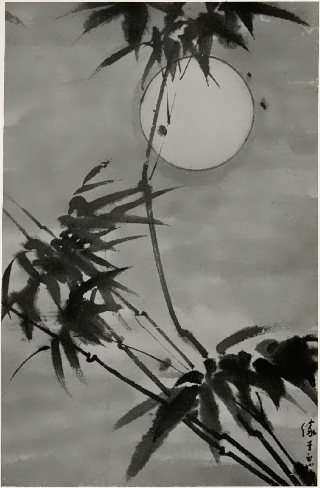
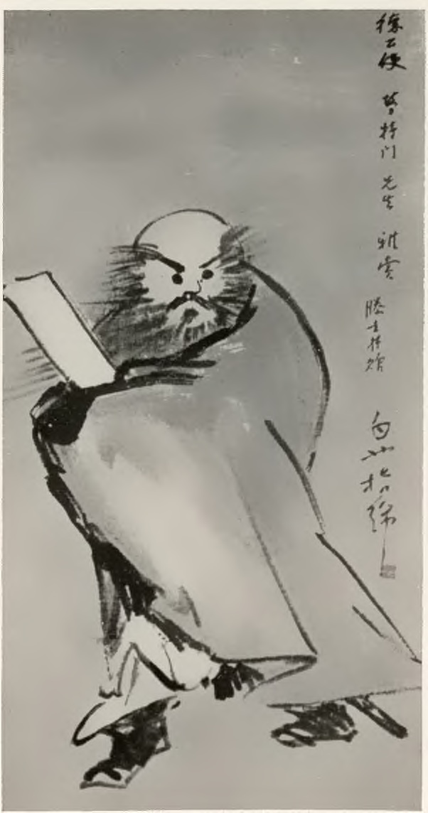

Die Sammlung heutiger chinesischer Malerei von Oskar P. Trautmann
1937（卷标1937/1938） · Erwin Rousselle · Die Kunst, Bd. 77, H. 2 · F. Bruckmann, München
印页58–63讨论陶德曼藏画。第58页刊《月夜竹》，第63页刊滕圭指画《钟馗》。后者与1942年苏黎世图录所刊W068构图和题款相同。The article on pp. 58–63 reproduces Bamboo in Moonlight (p. 58) and Teng’s finger-painted Zhong Kui (p. 63). The latter matches W068 in the 1942 Zürich catalogue.
预览文章六页：原刊印58–63Preview the six-page article, pp. 58–63


与1942年苏黎世图版比对，钟馗右侧长题款、双足及轮廓一致，作为同作的另一刊本保存。数字图版来自西里西亚图书馆；未改动作品内容。The inscription, feet and outline match the 1942 Zürich plate; both reproductions are attached to one work record. Images were extracted from the Silesian Library scan without changing the artwork.